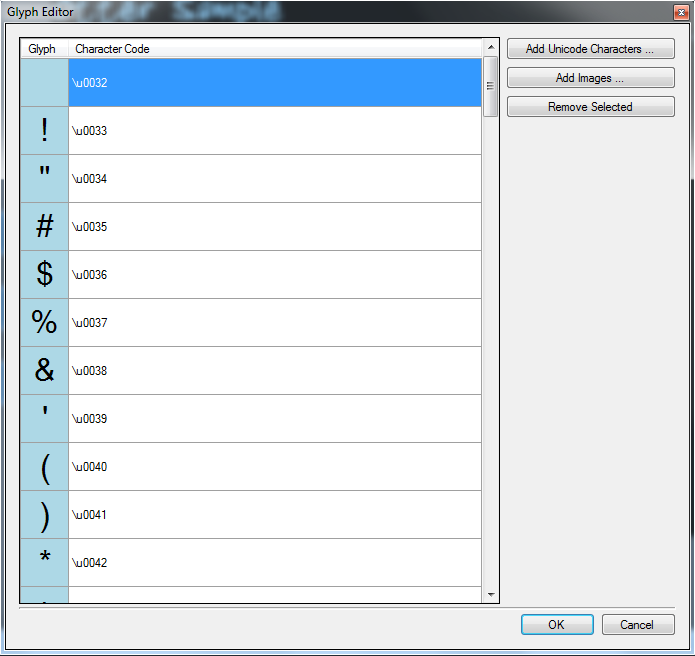
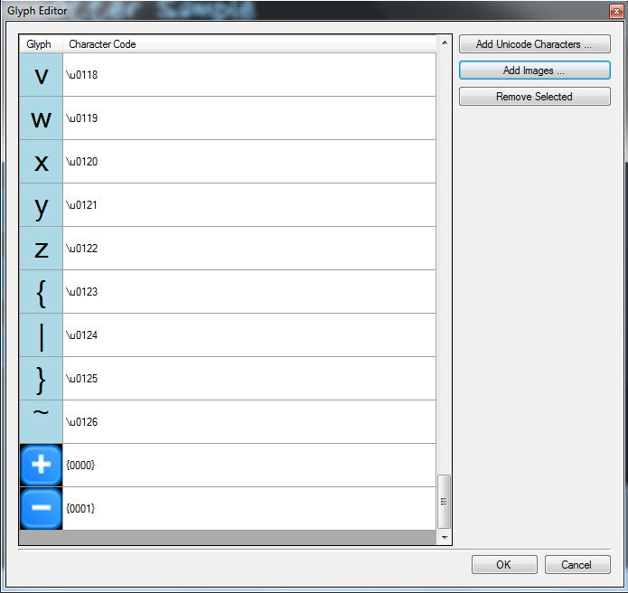

One of the most important aspects to a solid User Interface is the Font. Otter UI allows you to create fonts from a source TTF and point size, and also create and add your own custom glyphs.
This tutorial will cover the basics of adding a new font as well as adding Unicode characters and custom glyphs.
Adding a new Font
Your font is now ready to be used.
Adding Unicode characters
In order to support Unicode characters, your font must have the desired characters added ahead of time. This reduces the size of the exporting font texture by using only glyphs that you specify.

The font can now use and render the desired characters.
Adding custom glyphs
Adding custom glyphs function much in the same way as adding unicode characters. However, on the Glyph Editor screen click on Add Images instead. Once added, the custom images may look something like the following:

To use the new glyphs in a text string (ex, Label Control), use the format as indicated in the Character Code field. For example:
"This is a plus button: {0000}"
The Otter UI engine will parse the {0000} and print out the desired character in its place.
To change the character code of a custom glyph, double-click on its existing character code to start editing the value. All Alpha-numeric characters are accepted, except for { and }, as they are reserved for the parse tokens. The Custom Glyph character codes are also limited to at most four characters. Any extraneous characters will be trimmed.
Created with the Personal Edition of HelpNDoc: Easily create EPub books